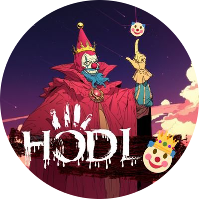

 Founder - Wang Dayou
Become A Legend In One Battle
Founder Wang Dayou is an early blockchain preacher in China, known in the industry as "Dayou", "Brother You", or "Youyou" (since the launch of the HODL project, some people have even started calling "Dad You").
Previously active on the domestic Bihu platform, he is particularly skilled at conducting in-depth analysis and later evaluations of projects. When the BSC project XVS was just launched, he predicted its future evolution path, which was later proven correct, leading his community members from single-digit cost investments to the 100u milestone, achieving legendary status in one fell swoop.
While the success of a project may contain a degree of luck, a series of subsequent operations by Wang Dayou have left people in awe.
While XVS (Venus project token) has gained huge profits, the well-known "three carriages" and "five carriages" have led group members to achieve huge profits.
To Take On A Critical Task In A Time Of Crisis
The Venus project is a leading lending project on BSC. With the prosperity of DEFI SUMMER, the price of XVS once reached over 140 US dollars. However, in May 2022, it encountered a platform liquidation crisis and the price plummeted by -90%. It is rumored that there were also internal problems within the Venus team, and Binance intervened in the investigation. Perhaps due to a deep affection for BSC chains, particularly Venus. Afterwards, Da You joined the Venus team and served as the Asia Pacific Leader, devoting himself wholeheartedly to the project's rescue and future planning.
A Latent Dragon In The Abyss
With the closure of the Bihu platform and his joining Venus, Wang Dayou had been largely silent in the crypto community. Later, he opened a Twitter account, but his presence was rare. Until one day, he posted a significant tweet stating "我是ArbDoge.AI这个匿名项目的创始人，经济学、运营、每一篇medium故事，每一篇推文都出自我手，$AIDOGE在5月到过两亿美金市值……" That was when everyone realized that the popular AIDOGE in the crypto space was created by him, and exclamations of "Wow!" and "Impressive!" filled the air. Of course, there is no market that only goes up, and no cryptocurrency price that only rises. Every project has its ups and downs, and everyone will receive praise and criticism. But who can ignore the influence of AiDoge?
The King Returns With HODL
In April 2024, Dayou returned with the HODL project as a king! It is difficult for us to summarize this project in one sentence, as its brilliance and diversity exceed your imagination.
During the heated and brutal "airdropping coins" phase on the SOL chain, Wang Dayou introduced a paid mint system, allowing people to use BNB to mint "LAW". However, in the end, the BNB was fully refunded, resulting in people mint "LAW" nft for free and even receiving airdrops of $HODL. Compared to those who distribute coins and then dump them or run away with excuses after fundraising, he stands out as a breath of fresh air.
Regarding previously presold NFTs, some people were worried about the project's development, but he surprisingly implemented a buyback policy, even at prices more than ten times the original. To those who received airdrops, he encouraged them to "dump" their holdings to lower the price, allowing newcomers to enter the market. When faced with doubts and distrust from some members of the community, he passionately explained himself in the group to the point of frenzy, and later even airdropped the entire reserved team allocation. He publicly called out "ran the table" but funded it through community crowdfunding, with all profits returned to the community. On Mother's Day, he even organized a "Cosplay @DAYOU's mom for one day!" event.
If you think he's a complicated person, he's also extremely simple and straightforward. In AMA(Ask Me Anything), he would directly tell you that the initial intention of this project was to "make money", but as it progressed, it turned into something more meaningful. He views this project as a work he wants to leave behind in the world. Compared to projects that tout high-sounding ideals of technological innovation and fundraising a significant amount of money before indulging in hedonism, he possesses a more idealistic mindset. Unlike those projects that manipulate, deceive, and emotionally manipulate users, he has achieved the goal of "letting idiots win at least once", a sentiment that has moved many "idiots" to tears. He's willing to bear pressure to ask friends for whitelist spots for the community, express his emotions through the project's background music, hide romance in Morse code, organize blind auctions for ZOO OF MEME, and host "strange" competitions in the group. For him, "fries" can become "credo", and the number "3" can be a symbol of faith. There are so many fascinating stories...
In conclusion, you never know how vast his imagination is and how unique his ideas are!
Smart people are often deceived by their own cleverness, and those who scheme too much are eventually forced to "shut down". Perhaps this is why the saying "Do good deeds and don't ask about the future" from HODL is always talked about with relish! This is the spirit of HODL!